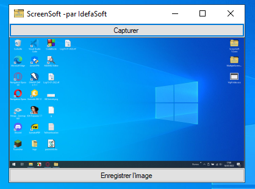

Voici la page dans laquelle les fonctionnalité principales des logiciels sont listées.
1 MultipleScreenshots

MultipleScreenshots est un petit logiciel léger permettant de réaliser un certain nombre de captures d'écran à intervalle régulier.
Voici ses principales caractéristiques :
- Il permet de prendre le nombre de captures d'écran (aucune limite) au même intervalle de temps.
- Il dispose de 8 formats d'images de sorties.
- L'intervalle entre chaque capture est presque entièrement personnalisable.
- L'utilisateur peut choisir le dossier de sortie.
- Le nom d'enregistrement des fichiers est entièrement personnalisable, l'utilisateur peut, en plus du nom du fichier qu'il veut, mettre des variables comme l'année, le jour, l'heure d'enregistrement de la capture, le nom de la machine ou encore le nom d'utilisateur.
Voici la liste de toutes ces variables :
- $A : l'année en cours
- $M : le mois en cours
- $J : le jour en cours
- $H : l'heure en cours
- $m : la minute en cours
- $S : la seconde en cours
- $User : le nom d l'utilisateur de l'ordinateur
- $Machine : le nom de la machine
Ainsi, si l'utilisateur rentre "$A-$M-$J_$H-$m-$s", l'image numéro 96 sera par exemple nommée "2022-01-25_16-54-17_96.png".
2 VigiFolder

VigiFolder est un logiciel léger permettant de surveiller la plupart des changements (tous ?) effectués dans un dossier (suppression, renommage, modification, création).
Voici ses principales caractéristiques :
- Il permet de surveiller les changements effectués même dans les sous dossiers du dossier sélectionné.
- Il permet d'exporter les données dans un fichier rtf.
- Si les données sont trop nombreuses, un bouton permet de toutes les supprimer.
3 IdefaNote

Un logiciel alternatif au bloc note de windows, avec de multiples options
Voici ses principales caractéristiques :
- La police, la couleur, la taille et l'alignement du texte sont modifiables
- Les notes sont enregistrées au format rtf (bien sûr, il peut ouvrir une note enregistrée).
- Il existe deux thèmes : le mode sombre et le mode clair. (les préférences sur le thème sont enregistrées)
- Les notes peuvent être ouverte en lecture seul.
- Lorsque l'application est masqué dans la barre des tâches, de multiples options avec un clic droit sont disponnibles.
- Des raccourcis comme Ctrl + W pour fermer ou Ctrl + S pour enregistrer sont présents.
4 ScreenSoft

ScreenSoft est un logiciel permettant de réaliser des captures d'écran.
Voici ses principales caractéristiques :
- Il permet de visualiser la capture d'écran.
- Il permet d'enregistrer la capture.
5 Trieur de fichiers

Trieur de fichiers est un logiciel triant les fichiers d'un dossier par extension en créant d'autres dossiers dans lequels ils seront déplacés.
Voici ses principales caractéristiques :
- Plus de 70 extensions de fichiers sont supportées, les autres extensions sont déplacées dans un dossier "Autres".
- Le logiciel est assez rapide.
- Bien qu'il n'ait pas d'interface graphique, il est très simple d'utilisation.
6 Pays et capitales

Pays et capitales est un logiciel permettant d'interroger l'utilisateur sur les pays et les capitales, avec différents modes possibles.
Voici ses principales caractéristiques :
- Il permet d'interroger l'utilisateur sur autant de pays ou capitales qu'il le souhaite.
- Il permet de visualiser un tableau avec la liste des pays avec leurs capitales.
- Bien qu'il n'ait pas d'interface graphique, il est très simple d'utilisation.
7 Cryptographie

Cryptographie est un logiciel qui crypte du texte en utilisant des codages très simple, il peut aussi crypter des fichiers textes.
Voici ses principales caractéristiques :
- Il permet de crypter du texte écrit directement dans le logiciel, ainsi que du texte provenant de fichiers textes.
- Il peut aussi décrypter le texte crypté.
- Bien qu'il n'ait pas d'interface graphique, il est très simple d'utilisation.